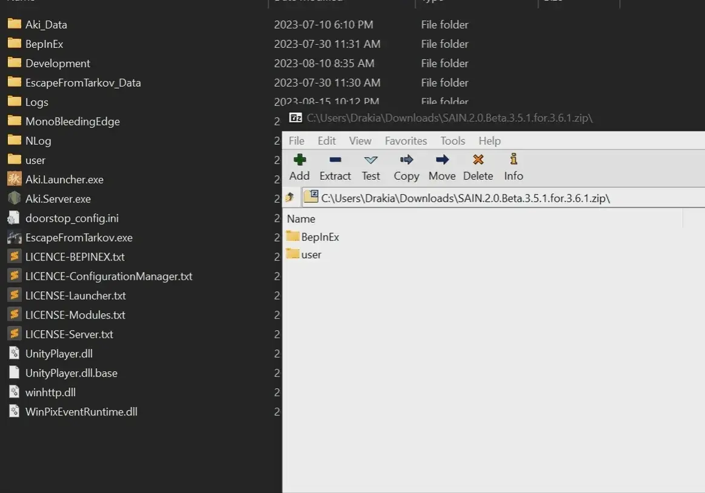

Mod
AutoRun
- Downloads
- 7,231
- Favourites
- 9
- Mod lists
- 6
Description
Adds a keybind that makes you auto-run!
- Default is Ctrl-W, bindable in the F12 menu.
- Cancels automatically when you press your normal forward or backward keys.
Installation
Like almost every mod here, extract the 7z archive into your SPT directory.
You need 7zip to extract and install this mod.
Example (thanks DrakiaXYZ for the gif)

Uninstallation
To uninstall, simply delete Tyfon.AutoRun.dll from <your SPT folder>/BepInEx/plugins
Troubleshooting
Q: How do I change the keybind?
A: Press F12 to bring up the client mod configuration menu, expand Tyfon.AutoRun, click the keybind and press whatever you want.
Q: I found a bug!
A: Open an issue or make a comment here. Please include logs if possible!
If you’d like to support my work, you can buy me a coffee ☕
Version
5.0.0
SPT ~4.0.0
Fika: unknown
2,427 downloads4.7 KB
Updated for SPT 4.0
VirusTotal: report 1
Version
4.0.0
SPT ~3.11.0
Fika: unknown
1,557 downloadsUnknown size
Updated for SPT 3.11 🚀
VirusTotal: report 1
Version
3.0.0
SPT ~3.10.0
Fika: unknown
975 downloadsUnknown size
Updated for SPT 3.10
VirusTotal: report 1
Version
2.0.0
SPT 3.9.0
Fika: unknown
1,350 downloadsUnknown size
Updated for 3.9.0
VirusTotal: report 1